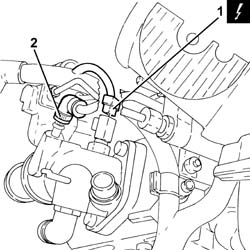
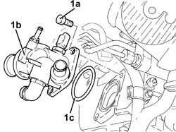
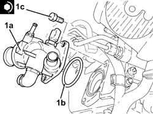
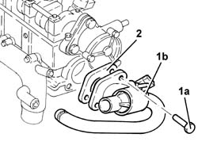

1088C42 thermostat - r + r with cylinder head removed
- Path
- Procedures > 10 ENGINE > 1088 ENGINE COOLING > 1088C water pump and thermostat > 1088C42 thermostat - r + r with cylinder head removed
- Kind
- repair procedure (removal / refitting; the operation number is the code)
- Applies to
- engines: 2.0 JTS, 1.9 JTD 8v , 2.0 JTS, 2.4 JTD 10v; all production periods
- Interactive page
- https://sloeber94.github.io/elrnDB-a156/en/#/3239095
Applies to: engines: 2.0 JTS, 2.0 JTS; all production periods
 Removing
Removing
 Refitting
RefittingPosition the cylinder head on a suitable workbench.
1. Disconnect the electrical connection from the engine coolant temperature sensor.
 | Name | Connector |
|---|---|---|
1 | Engine temperature sender unit |
2. Loosen the band and disconnect the coolant return pipe to the coolant reservoir from the thermostat, then remove.

Applies to: engines: 2.0 JTS, 2.0 JTS; all production periods
1. Undo the bolts (1a) and remove the thermostat (1b) complete with O-Ring (1c).

Applies to: engines: 2.0 JTS, 2.0 JTS; all production periods
Refitting
Removing1. Refit thermostat (1a), complete with O-ring (1b) and secure by tightening the bolts (1c) to the recommended torque.
 | Fastening | Component | Ø | Value (daNm) |
|---|---|---|---|---|
1c | Bolt | THERMOSTAT | M8 | (Cylinder head side) 2.3 ÷ 2.8 |

Applies to: engines: 2.0 JTS, 2.0 JTS; all production periods
Connect the engine coolant return pipe to the supply reservoir, thermostat side and tighten the band.
Connect the electrical connection to the engine coolant temperature sensor.
Applies to: engines: 1.9 JTD 8v , 2.4 JTD 10v; all production periods
Removing
Refitting1. Undo the bolts (1a) and remove the thermostat (1b) complete with pipe and sensor.
2. Remove the seal.

Applies to: engines: 1.9 JTD 8v , 2.4 JTD 10v; all production periods
Refitting
RemovingPlace the gasket back in its housing.
Place the thermostat, complete with pipes and sensor, back in its housing and tighten the bolts to the recommended torque.
| Fastening | Component | Ø | Value (daNm) |
|---|---|---|---|---|
- | Bolt | THERMOSTAT | M8 | (Cylinder head side) 2.1 ÷ 2.6 |